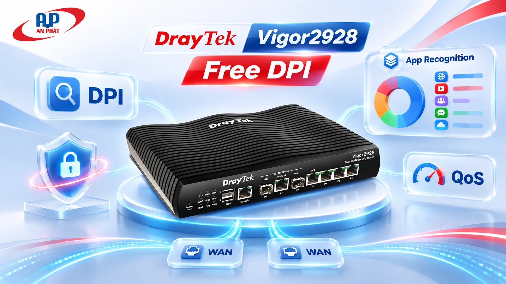
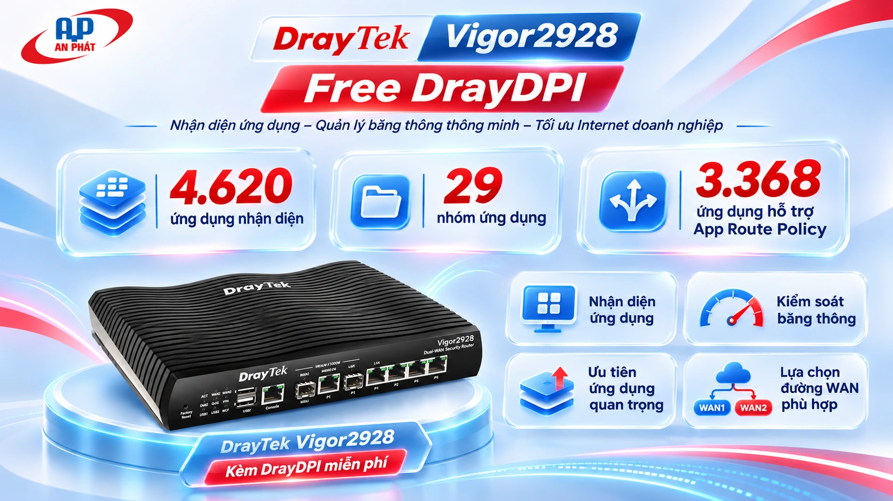
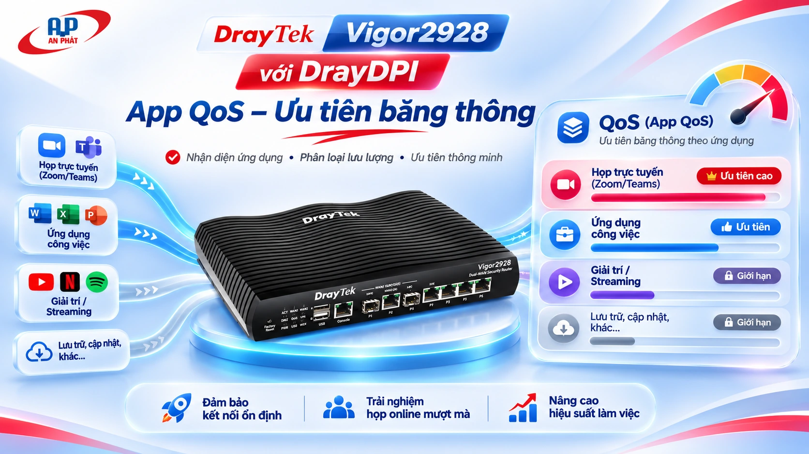
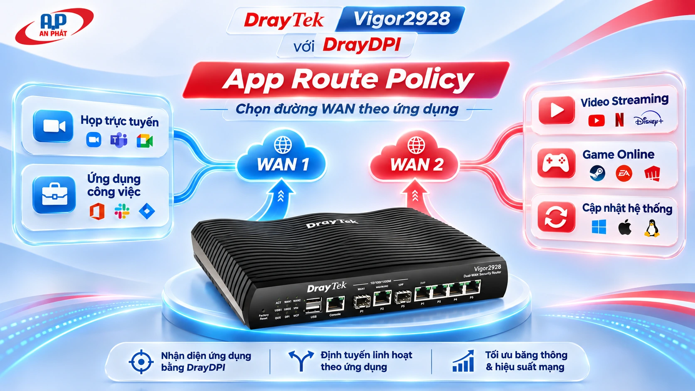
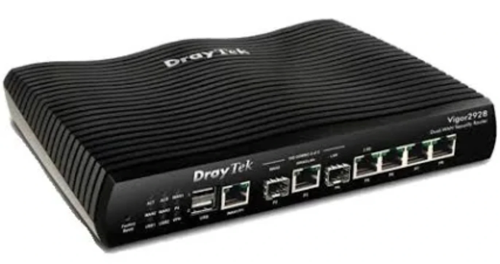
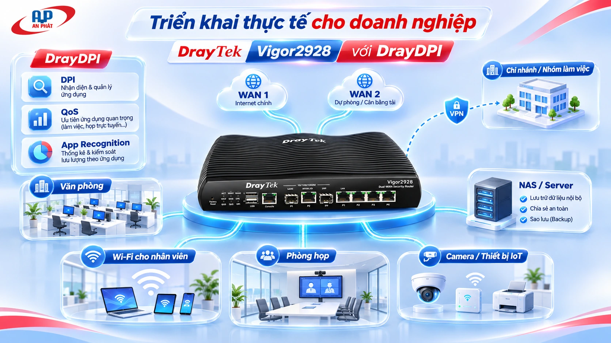

Content Filters
Cho phép hoặc chặn ứng dụng, nhóm ứng dụng theo người dùng, nguồn truy cập và lịch làm việc.
Xem hình minh họa →Không chỉ kết nối Internet. Vigor2928 giúp doanh nghiệp biết ứng dụng nào đang sử dụng mạng để chặn đúng ứng dụng, ưu tiên đúng lưu lượng và chọn đúng đường WAN — với công nghệ nhận diện DrayDPI tích hợp.

Thay vì chỉ quản lý IP và port, người quản trị có thể xây dựng chính sách dựa trên tên ứng dụng hoặc nhóm ứng dụng. Đây là lợi ích nổi bật của DrayOS 5 trên Vigor2928.

Hình minh họa bộ tính năng DrayDPI theo dữ liệu ứng dụng 1.830.0-20.
DrayDPI là nền tảng nhận diện; router cho phép người quản trị áp dụng chính sách phù hợp theo nhu cầu vận hành thực tế.
Cho phép hoặc chặn ứng dụng, nhóm ứng dụng theo người dùng, nguồn truy cập và lịch làm việc.
Xem hình minh họa →Đặt mức ưu tiên cho ứng dụng quan trọng khi đường Internet xảy ra cạnh tranh băng thông.
Xem hình minh họa →Chọn đường WAN cho các ứng dụng hỗ trợ định tuyến sớm; dùng Domain cho ứng dụng không có trong danh sách.
Xem hình minh họa →Chuyển qua từng tính năng để xem router xử lý ứng dụng như thế nào. Hình minh họa theo tình huống, không phải ảnh chụp giao diện cấu hình thực tế.
Thay vì chặn thủ công từng IP, có thể đặt chính sách theo nhóm Game, P2P hoặc ứng dụng cụ thể.

DrayDPI nhận diện ứng dụng để App QoS áp chính sách thứ tự ưu tiên khi phát sinh nghẽn.

App Route Policy chọn WAN theo nhận diện ứng dụng nếu ứng dụng có trong danh sách hỗ trợ; những dịch vụ còn lại có thể dùng định tuyến theo tên miền.
Mô phỏng cách đánh giá khả năng DrayDPI dựa trên dữ liệu trong tài liệu EC3; không kết nối đến router.
DrayDPI nhận diện ứng dụng để áp dụng chính sách.
Tập trung vào kết quả người vận hành quan tâm thay vì chỉ liệt kê những thuật ngữ kỹ thuật.
Khi nhiều người đồng thời xem video hoặc download, đường truyền bị cạnh tranh.
Ứng dụng: App QoSKhó xác định ứng dụng phát sinh lưu lượng không phù hợp chính sách công ty.
Ứng dụng: Content FiltersLuồng công việc và giải trí không được tổ chức theo mục đích sử dụng.
Ứng dụng: App Route PolicyCác bản cập nhật lớn có thể ảnh hưởng ứng dụng ưu tiên của doanh nghiệp.
Ứng dụng: QoS + Route Policy
DrayDPI tạo thêm giá trị cho phần cứng Vigor2928: nhìn ra ứng dụng để phối hợp chính sách đa WAN, ưu tiên băng thông và kiểm soát truy cập.

Tìm theo tên, lọc nhóm ứng dụng hoặc kiểm tra khả năng áp dụng App Route Policy. Content Filters và App QoS hỗ trợ danh sách ứng dụng nhận diện trong tài liệu nguồn.
| Content Filters | App QoS |
|---|
✓ Có trong danh sách tính năng • — Không hỗ trợ App Route Policy (xem phương án Domain). Dữ liệu dựa trên Application Recognition DB 1.830.0-20; menu firmware thực tế là tham chiếu cuối cùng.
Theo định hướng sản phẩm và thông điệp AN PHÁT cung cấp, tính năng nhận diện ứng dụng DrayDPI được giới thiệu là không tính thêm phí bản quyền DPI riêng. Điều này không đồng nghĩa mọi dịch vụ bảo mật nâng cao khác đều miễn phí. Khi đặt mua, hãy xác nhận firmware và chính sách cung cấp theo thị trường.
App Route Policy cần xác định đường WAN từ đầu kết nối, vì vậy chỉ có một số ứng dụng có thể nhận diện đủ sớm. Các ứng dụng còn lại có thể dùng Destination = Domain khi phù hợp. Content Filters và App QoS có danh sách nhận diện đầy đủ hơn.
Theo tài liệu EC3 v5.5.0, DrayTek DPIv2 nhận diện ứng dụng dựa trên đặc điểm lưu lượng và không giải mã hoặc đọc nội dung đang truyền. Khả năng nhận diện có thể khác nhau theo ứng dụng, phiên bản và cách lưu lượng được đóng gói.
Nhận diện ứng dụng có thể cần thời gian học lưu lượng. Kết nối đầu tiên có thể đi theo đường mặc định; các kết nối sau mới sử dụng đường WAN theo chính sách đã áp nếu ứng dụng được hỗ trợ.
Không. EC3 là cách DrayTek định danh nhóm thiết bị/firmware được đề cập trong tài liệu; Vigor2928 vẫn là tên model sản phẩm. Những model khác cũng có thể thuộc nhóm EC3.
Kiểm soát ứng dụng chuyên sâu, quản trị băng thông và tận dụng nhiều kết nối WAN. Chia sẻ nhu cầu của doanh nghiệp để nhận phương án cấu hình và báo giá phù hợp.